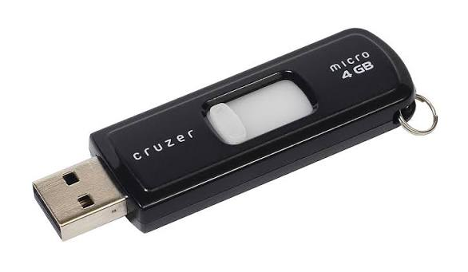

Waterloo Aerial Robotics Group
I am a member of the WARG firmware and electrical subteams, and I work on embedded systems, PCB design, and validation for custom drone hardware. The projects below are the major WARG efforts I have contributed to, ordered by the latest firmware resume information and written as sentence-form summaries.
CAN Flight State LED Indicator
I developed the CAN firmware for the LED system to provide visual feedback about the aircraft flight state, including takeoff, landing, and other operating states. I validated the firmware on physical PCBs using STM32CubeDebugger to fix internal handling issues and confirm correct behavior under real hardware conditions. I used an agentic AI workflow to inspect linker map artifacts and diagnose memory-alignment issues in WARG's DroneCAN/UAVCAN support layer, PineCAN. I also created Lua test scripts to streamline validation, and I enabled users to flash the board through VS Code using the CMake and ARM GNU toolchain.

USB-to-CAN Converter
I designed a custom USB-to-CAN adapter that enabled direct board flashing by translating USB serial traffic into CAN bus communication. I implemented an SLCAN parsing library so serial host commands could be converted into native CAN messages with the correct timing and structure. I focused on robust communication through sequencing, acknowledgements, retries, CRC checks, and bootloader control so the firmware update path was reliable.

Potentiometer-to-PWM Motor Tester
I implemented STM32 firmware to test motors at different speeds by mapping potentiometer readings to a PWM signal. I configured the SPI library to communicate with the MCP3004 ADC and read the potentiometer value accurately. I used a DMM to verify the RMS output voltage at different potentiometer states and confirm the expected PWM behavior.

Battery Voltage Regulator
I designed a PCB in Altium to regulate battery voltage for an accelerometer using an LDO. I referenced supplier datasheets to create custom symbols and footprints for connectors and integrated circuits. This work improved the power path reliability and supported the sensor subsystem on the hardware platform.